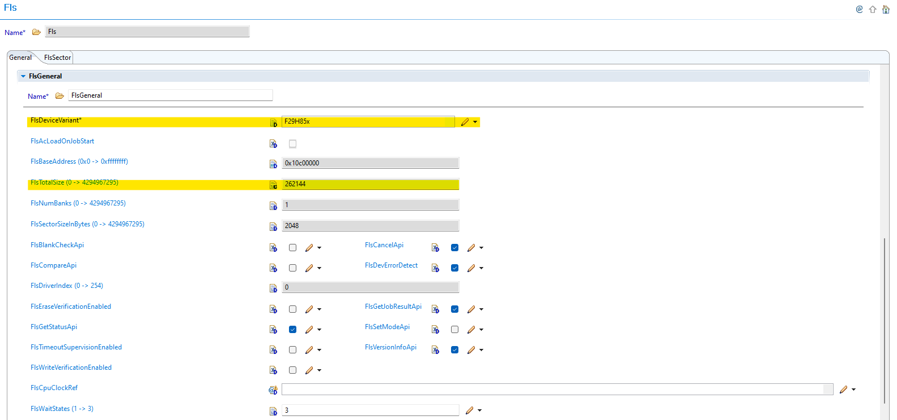
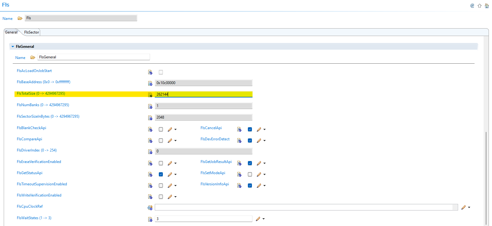
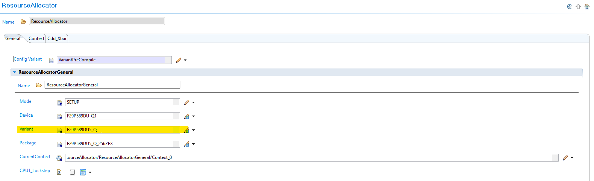

5.4. FLS Module Migration
Migration Approach: Follow sequential migration for clear understanding of changes at each version. Each migration is organized by individual changes with description, old vs new comparison, and migration actions.
5.4.1. v03.00.00 (i.e release v01.04.00) from v02.00.00 (i.e release v01.03.00) Migration
5.4.1.1. Summary
Version v03.00.00 introduces Resource Allocator as a mandatory architectural foundation and moves flash device configuration to centralized resource management. This represents a fundamental shift from direct parameter configuration to Resource Allocator-derived settings:
Resource Allocator Introduction: Resource Allocator becomes mandatory for FLS module configuration with device variant setup
Flash Parameter Derivation: FlsTotalSize and flash characteristics are now automatically derived from Resource Allocator configuration
PREREQUISITE: Complete Resource Allocator Setup before proceeding.
5.4.1.2. Change 1: Resource Allocator Introduction
5.4.1.2.1. Description
Resource Allocator becomes a mandatory architectural foundation for the FLS module. The flash device configuration is moved to centralized resource management where device variant and package selection in Resource Allocator determines flash memory size and characteristics.
5.4.1.2.2. Old vs New Configuration
Previous Configuration (v02.00.00): Direct flash parameter configuration was used with manual FlsTotalSize and device variant selection.
{kind=link}

Fig. 5.16 v02.00.00: Direct FlsTotalSize and device variant parameter configuration
New Configuration (v03.00.00): FLS parameters are automatically derived from Resource Allocator configuration.
{kind=link}

Fig. 5.17 v03.00.00: FlsTotalSize parameter is automatically populated based on Resource Allocator device variant configuration
5.4.1.2.3. Migration Actions
Setup Resource Allocator: Follow Resource Allocator Setup
Configure Device Variant: Navigate to ResourceAllocatorGeneral → General and configure device settings:
{kind=link}

Fig. 5.18 Configure device variant and package selection - this determines flash memory size and characteristics
5.4.1.3. Change 2: Flash Parameter Derivation
5.4.1.3.1. Description
FlsTotalSize and other flash characteristics are now automatically derived from the Resource Allocator configuration instead of requiring manual configuration. This ensures consistency and eliminates configuration errors related to flash memory specifications.
5.4.1.3.2. Old vs New Parameter Configuration
Parameter Derivation Changes:
Parameter |
v02.00.00 |
v03.00.00 |
|---|---|---|
FlsTotalSize |
Manual configuration required |
Automatically derived from Resource Allocator device variant |
Flash Characteristics |
Device variant selected in FLS module |
Derived from Resource Allocator configuration |
Device Settings |
Direct configuration in FLS |
Centralized in Resource Allocator |
5.4.1.3.3. Migration Actions
Navigate to FLS Module: Open the Fls module configuration in EB Tresos
Verify Automatic Configuration: Confirm that flash parameters are correctly derived from Resource Allocator
Remove Manual Settings: Any previously manual FlsTotalSize or device variant settings are now handled automatically
Validate Parameters: Ensure the automatically populated FlsTotalSize matches your device specifications
Note
The Resource Allocator module must be configured before the FLS module to ensure correct flash parameter availability. For more details on Resource Allocator configuration, see the Resource Allocator Module User Guide.
5.4.2. v02.00.00 (i.e release v01.03.00) from v01.00.00 (i.e release v01.02.00) Migration
5.4.2.1. Summary
Version v02.00.00 introduces AUTOSAR compliance for configuration structure naming according to requirement TPS_ECUC_08011:
Configuration Structure Name Change: FLS configuration structure name updated for AUTOSAR TPS_ECUC_08011 compliance
5.4.2.2. Change 1: Configuration Structure Name Change
5.4.2.2.1. Description
Version v02.00.00 changes the configuration structure name for AUTOSAR TPS_ECUC_08011 compliance. This change ensures compliance with AUTOSAR naming conventions and requires updates to application code that references the FLS configuration structure.
5.4.2.2.2. Old vs New Configuration Structure
Configuration Structure Name Mapping:
v01.01.00 |
v02.00.00 |
|---|---|
|
|
Code Examples:
// v01.01.00 or any older versions
Fls_Init(&Fls_FlsConfigSet);
// v02.00.00
Fls_Init(&Fls_Config);
5.4.2.2.3. Migration Actions
Search Application Code: Find all references to
Fls_FlsConfigSetin your application codeReplace Structure Name: Update all references from
Fls_FlsConfigSettoFls_ConfigUpdate Function Calls: Ensure all FLS initialization calls use the new structure name
Update Upper Modules: Update any upper modules that reference the configuration structures to use the new structure name
Verify Compilation: Clean build and verify no compilation errors related to FLS configuration structure